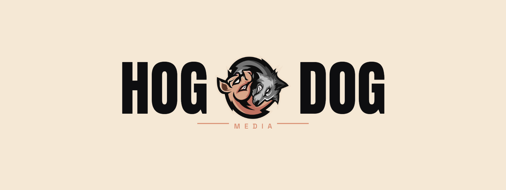
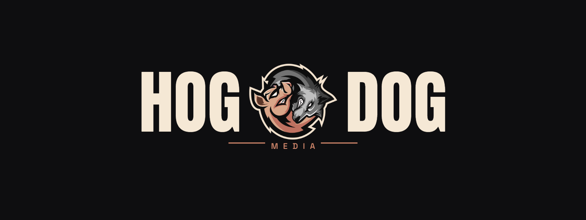
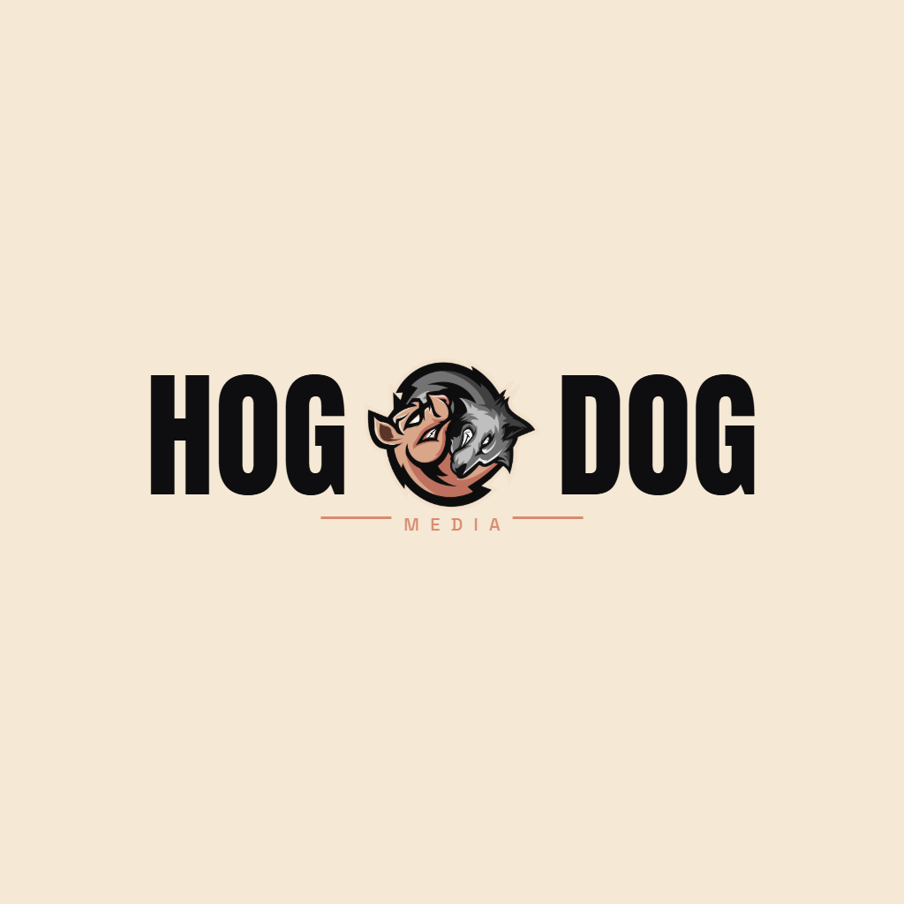
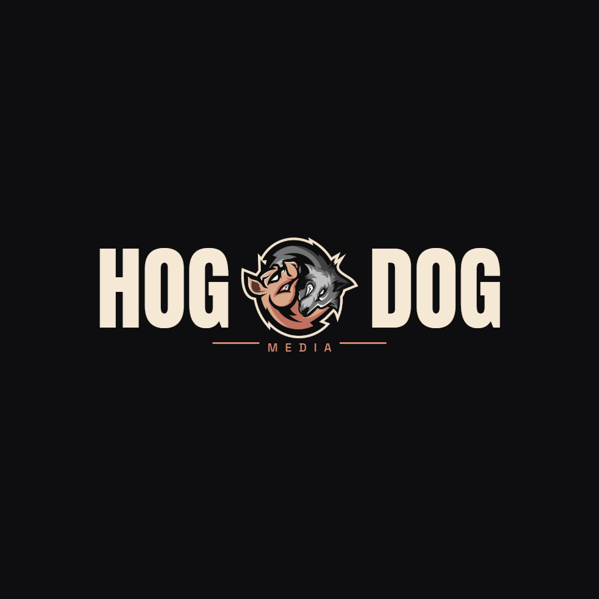
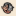
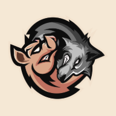
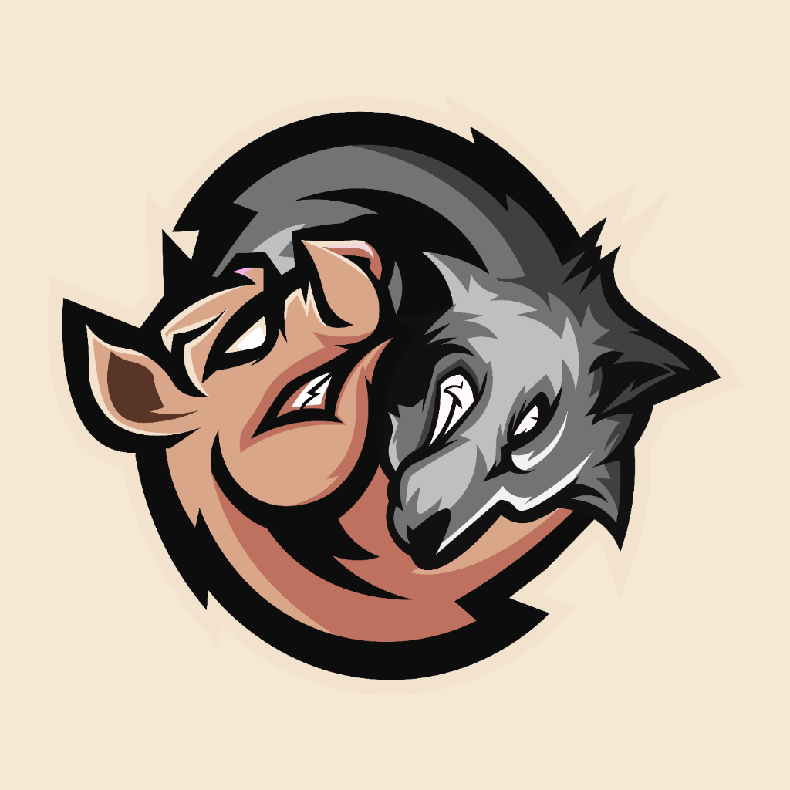

Everything you need to put the logo in the world — vectors, rasters, favicons, and avatar masks. Each file is documented with its intended use so you can decide what to ship and what to revise.
The full HOG <mascot> DOG mark — V2 ampersand, locked. Use these in any first-position context: hero, brand pages, intro frames.




SVG masters available: horizontal-cream.svg, horizontal-dark.svg, stacked-cream.svg. These reference the mascot art as an embedded raster (since the mascot is an illustration, not a clean vector).
For a fully vector-only file (mascot redrawn as paths) — see the vector trace section below.
The yin-yang mark on its own, no wordmark. Use for: app icons, small navbar marks, social profile pictures, watermarks, podcast cover thumbnails.
Source mascot is 5146×4440 PNG (transparent background). All renders preserve the original aspect ratio. Below 64px the detail starts to degrade — for very small contexts (favicon, OS dock icon) use the dedicated favicon files in the next section, which include a cream backdrop for legibility.
Cream-bg variants — at 16/32 px the transparent mascot disappears against light browser tabs, so these get a flat #F5E8D5 fill behind them. PWA + Apple touch sizes included.


HTML snippet — drop into <head>:
<link rel="icon" type="image/png" sizes="32x32" href="/favicon-32.png">
<link rel="icon" type="image/png" sizes="16x16" href="/favicon-16.png">
<link rel="apple-touch-icon" sizes="180x180" href="/favicon-180.png">
<link rel="manifest" href="/site.webmanifest">
Circle-cropped versions for social profile photos (X, YouTube channel icon, Instagram, podcast platforms).

For when you need infinite scalability — print, embroidery, signage. Two approaches, document below.
✓ Pros: Wordmark stays crisp at any size. Editable in Illustrator/Figma. Color tokens controllable via fill attributes.
✗ Cons: Mascot is still a raster reference inside the SVG — when scaled past ~3000px it'll start to blur. Not suitable for vinyl cutting or single-color print.
Use for: web, slides, video, anywhere you'd otherwise use a high-res PNG.
✓ Pros: Truly infinite scaling. Single-color variants possible. Editable as paths. Smaller file size.
✗ Cons: Stylized mascot illustration cannot be auto-traced cleanly — it needs a designer in Illustrator to redraw the pig + dog as bezier paths. Hand-tracing the existing mascot is a separate job (~$200–500 from a vector illustrator on Fiverr/Upwork, or ~3–5 hrs in Illustrator if you do it yourself).
Recommended path: ship the hybrid SVG now, commission a vector trace later only if you need it for merch/embroidery/signage.
When to reach for which file.
Header logo: horizontal-cream.svg at ~140–200px wide
Favicon: favicon-32.png + favicon-180.png
Empty states: mascot-256.png alone
Profile pic: avatar-512.png
X/Twitter banner: use horizontal-dark-1600.png as base, add your taglines
YouTube channel art: stacked variant, full-bleed dark
YouTube intro / outro: horizontal-dark-1600.png
Print < A4: any 1600px PNG
Print > A4 / merch: commission a vector trace first
Ask me to "package the exports folder" and I'll bundle the whole exports/ directory as a downloadable archive.
{kind=link}
{kind=link}
{kind=link}
{kind=link}
{kind=link}
{kind=link}
{kind=link}
{kind=link}
{kind=link}
{kind=link}
{kind=link}
{kind=link}
{kind=link}
{kind=link}
{kind=link}